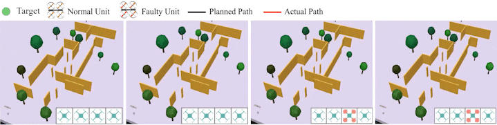
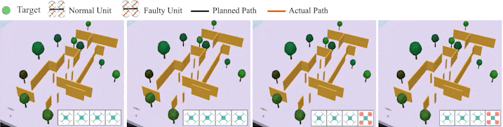
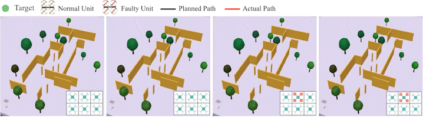

Abstract
Modular Aerial Robot Systems (MARS) consist of multiple drone units that can self-reconfigure to adapt to various mission requirements and fault conditions. However, existing fault-tolerant control methods exhibit significant oscillations during docking and separation, impacting system stability. To address this issue, we propose a novel fault-tolerant control reallocation method that adapts to an arbitrary number of modular robots and their assembly formations. The algorithm redistributes the expected collective force and torque required for MARS to individual units according to their moment arm relative to the center of MARS mass. Furthermore, we propose an agile trajectory planning method for MARS of arbitrary configurations, which is collision-avoiding and dynamically feasible. Our work represents the first comprehensive approach to enable fault-tolerant and collision avoidance flight for MARS. We validate our method through extensive simulations, demonstrating improved fault tolerance, enhanced trajectory tracking accuracy, and greater robustness in cluttered environments. The videos and source code of this work are available at https://github.com/RuiHuangNUS/MARS-FTCP/
Simulation in CoppelisSim: collision-free trajectory tracking



Collision-free trajectory tracking
Poster
BibTeX
If you find our work useful, please consider citing:
@article{xxx,
title={MARS},
author={},
journal={arXiv preprint arXiv:},
year={2025}
}Our related works
[1] Rui Huang, Siyu Tang, Zhiqian Cai, and Lin Zhao. "Robust Self-Reconfiguration for Fault-Tolerant Control of Modular Aerial Robot Systems." In 2025 International Conference on Robotics and Automation (ICRA). arXiv preprint
[2] Rui Huang, Zhenyu Zhang, Siyu Tang, Zhiqian Cai, and Lin Zhao. "MARS-FTCP: Robust Fault-Tolerant Control and Agile Trajectory Planning for Modular Aerial Robot Systems." In 2025 IEEE/RSJ International Conference on Intelligent Robots and Systems (IROS). arXiv preprint